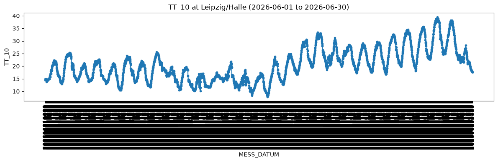
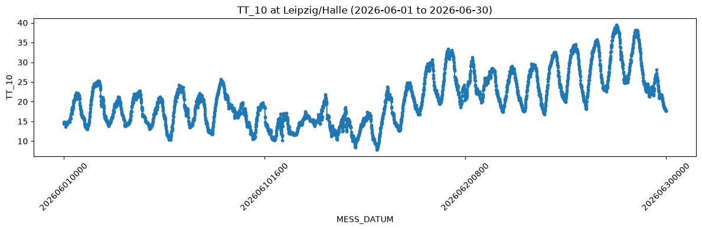

Solution: Analysing Weather data#
In this notebook we analyse temperature records. We analyse a snapshot of the data that was saved right after the summer heatwave in Germany 2026. The data originated from Deutscher Wetterdienst (DWD) Open Data portal. Source: https://opendata.dwd.de/, licensed CC-BY 4.0 Read more: https://www.dwd.de/EN/service/legal_notice/legal_notice_node.html
import matplotlib.pyplot as plt
import pandas as pd
import numpy as np
import stackview
import os
If the data is not present yet, we download it.
if not os.path.exists("temp_recent.parquet"):
from datasets import load_dataset
ds = load_dataset("haesleinhuepf/dwd_temperature_july2026")
# Save one split as Parquet
ds["train"].to_parquet("temp_recent.parquet")
We connect to Blablador.
from bia_bob import config_blablador, bob
config_blablador()
The data looks like the following. The most important columns are:
TT_10average temperature measured in a time-window of 10 minutes.Stationsnamephysical place (city) of the measurementgeoBreiteandgeoLaengelatitude and longitude coordinate of the measurement stationMESS_DATUMdate and time of the measurement in formatYYYYMMDDhhmm.
df = pd.read_parquet("temp_recent.parquet")
df.head()
| STATIONS_ID | MESS_DATUM | QN | PP_10 | TT_10 | TM5_10 | RF_10 | TD_10 | eor | Stations_id | von_datum | bis_datum | Stationshoehe | geoBreite | geoLaenge | Stationsname | Bundesland | Abgabe | datetime | |
|---|---|---|---|---|---|---|---|---|---|---|---|---|---|---|---|---|---|---|---|
| 0 | 44 | 202412310000 | 3 | -999.0 | 6.4 | 6.0 | 87.3 | 4.4 | eor | 00044 | 20070208 | 20260704 | 44 | 52.9336 | 8.237 | Großenkneten | Niedersachsen | Frei | 2024-12-31 00:00:00 |
| 1 | 44 | 202412310010 | 3 | -999.0 | 6.4 | 6.1 | 86.9 | 4.4 | eor | 00044 | 20070208 | 20260704 | 44 | 52.9336 | 8.237 | Großenkneten | Niedersachsen | Frei | 2024-12-31 00:10:00 |
| 2 | 44 | 202412310020 | 3 | -999.0 | 6.4 | 5.9 | 87.5 | 4.5 | eor | 00044 | 20070208 | 20260704 | 44 | 52.9336 | 8.237 | Großenkneten | Niedersachsen | Frei | 2024-12-31 00:20:00 |
| 3 | 44 | 202412310030 | 3 | -999.0 | 6.4 | 6.0 | 87.1 | 4.4 | eor | 00044 | 20070208 | 20260704 | 44 | 52.9336 | 8.237 | Großenkneten | Niedersachsen | Frei | 2024-12-31 00:30:00 |
| 4 | 44 | 202412310040 | 3 | -999.0 | 6.4 | 5.9 | 87.9 | 4.5 | eor | 00044 | 20070208 | 20260704 | 44 | 52.9336 | 8.237 | Großenkneten | Niedersachsen | Frei | 2024-12-31 00:40:00 |
df.columns
Index(['STATIONS_ID', 'MESS_DATUM', ' QN', 'PP_10', 'TT_10', 'TM5_10',
'RF_10', 'TD_10', 'eor', 'Stations_id', 'von_datum', 'bis_datum',
'Stationshoehe', 'geoBreite', 'geoLaenge', 'Stationsname', 'Bundesland',
'Abgabe', 'datetime'],
dtype='object')
Places in the data#
First we explore the dataset to see what regional data is available.
%%bob
Print out unique records in df["Stationsname"] where the name contains "Leipzig"
I will filter the Stationsname column of the DataFrame df for entries containing “Leipzig” and print the unique values.
leipzig_stations = df.loc[df["Stationsname"].str.contains("Leipzig", na=False), "Stationsname"].unique()
print(leipzig_stations)
['Leipzig-Holzhausen' 'Leipzig/Halle']
Temperature highscores#
Next, we identify the highest temperature measured in one place.
%%bob
Print out the maximum of column "TT_10" where "Stationsname" is "Leipzig/Halle"
I will filter df for rows where Stationsname equals "Leipzig/Halle" and print the maximum value of the TT_10 column.
print(df.loc[df["Stationsname"] == "Leipzig/Halle", "TT_10"].max())
39.5
Plotting#
We can also plot the temperature records over time.
%%bob
Print out the maximum MESS_DATUM
I will print the maximum value of the MESS_DATUM column from df.
print(df["MESS_DATUM"].max())
202607032350
%%bob
Draw a plot of column "TT_10" for the date range from 202606010000 to 202606300000 (column "MESS_DATUM") at Stationsname "Leipzig/Halle"
I will filter df for station "Leipzig/Halle" and MESS_DATUM within the range 202606010000–202606300000, then plot TT_10 against MESS_DATUM.
import matplotlib.pyplot as plt
sub = df[(df["Stationsname"] == "Leipzig/Halle") &
(df["MESS_DATUM"].astype(int) >= 202606010000) &
(df["MESS_DATUM"].astype(int) <= 202606300000)].copy()
sub = sub.sort_values("MESS_DATUM")
plt.figure(figsize=(12, 4))
plt.plot(sub["MESS_DATUM"].astype(str), sub["TT_10"], marker=".", linestyle="-")
plt.xticks(rotation=90)
plt.xlabel("MESS_DATUM")
plt.ylabel("TT_10")
plt.title("TT_10 at Leipzig/Halle (2026-06-01 to 2026-06-30)")
plt.tight_layout()
plt.show()

import matplotlib.pyplot as plt
import numpy as np
sub = df[(df["Stationsname"] == "Leipzig/Halle") &
(df["MESS_DATUM"].astype(int) >= 202606010000) &
(df["MESS_DATUM"].astype(int) <= 202606300000)].copy()
sub = sub.sort_values("MESS_DATUM")
sub = sub[sub["TT_10"] >= -900]
plt.figure(figsize=(12, 4))
plt.plot(sub["MESS_DATUM"].astype(str), sub["TT_10"], marker=".", linestyle="-")
ticks = np.linspace(0, len(sub) - 1, 4).astype(int)
plt.xticks(ticks, sub["MESS_DATUM"].astype(str).iloc[ticks], rotation=45)
plt.xlabel("MESS_DATUM")
plt.ylabel("TT_10")
plt.title("TT_10 at Leipzig/Halle (2026-06-01 to 2026-06-30)")
plt.tight_layout()
plt.show()

Exercise#
Determine where an when was the highest temperature measured in the dataset.
%%bob
Determine maximum TT_10 and give me corresponding MESS_DATUM and Stationsname
I will find the row with the maximum valid TT_10 (excluding missing values below -900) and print the corresponding MESS_DATUM and Stationsname.
valid = df[df["TT_10"] >= -900]
row = valid.loc[valid["TT_10"].idxmax()]
print("TT_10: ", row["TT_10"])
print("MESS_DATUM: ", row["MESS_DATUM"])
print("Stationsname: ", row["Stationsname"])
TT_10: 41.4
MESS_DATUM: 202606271450
Stationsname: Saarbrücken-Burbach